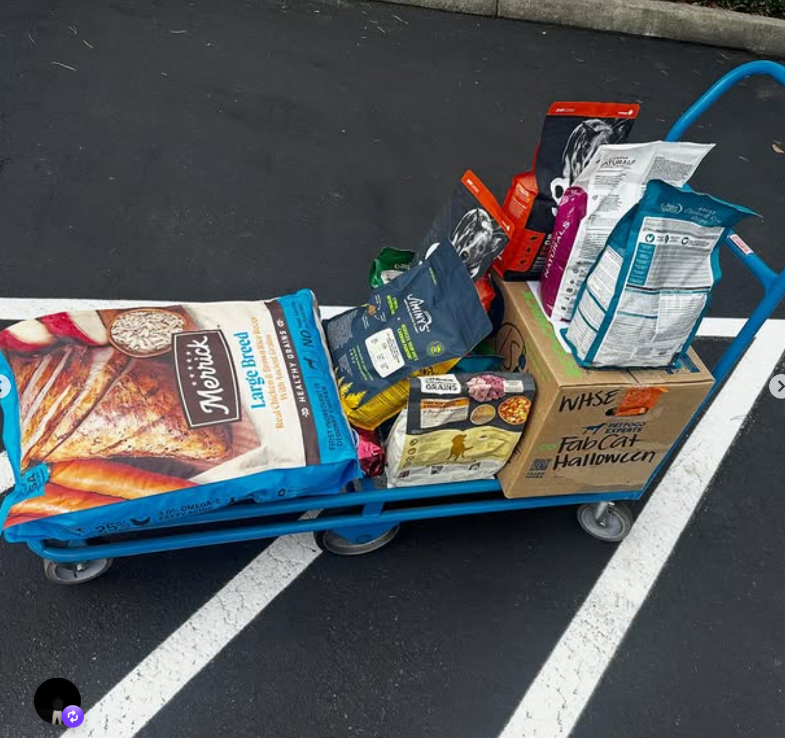
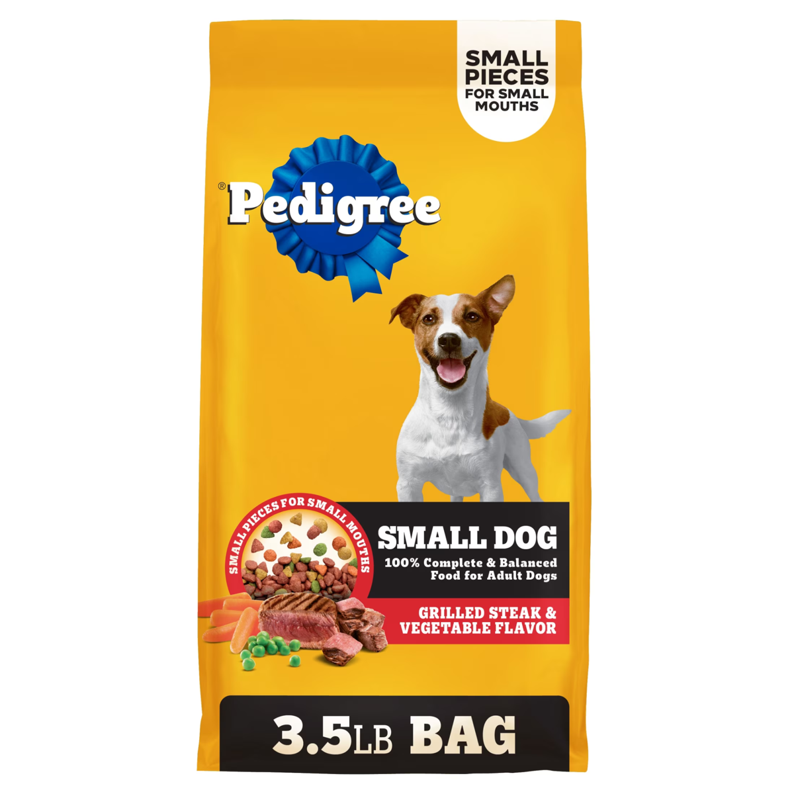
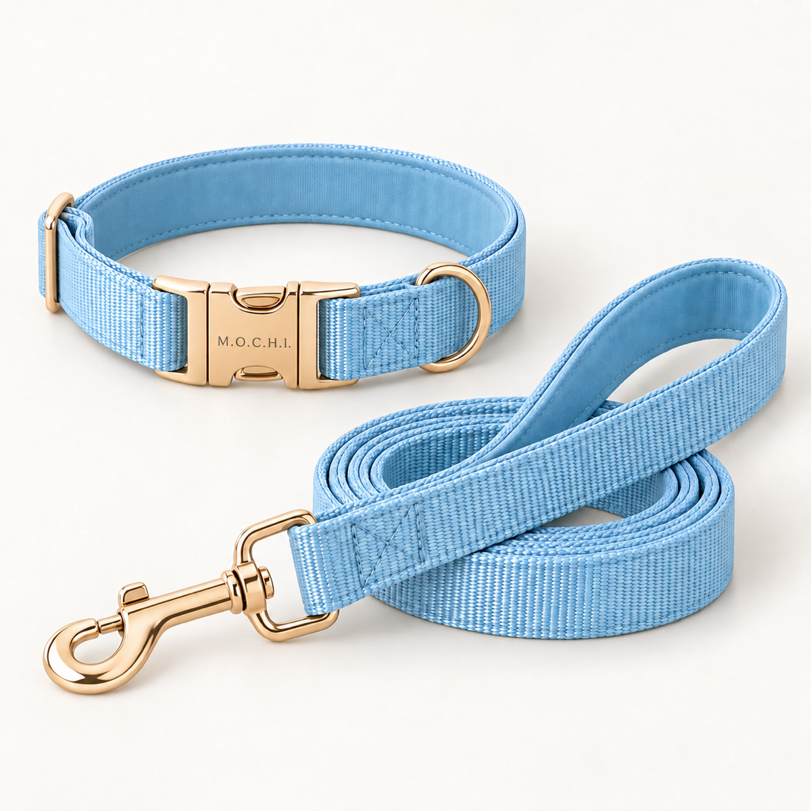
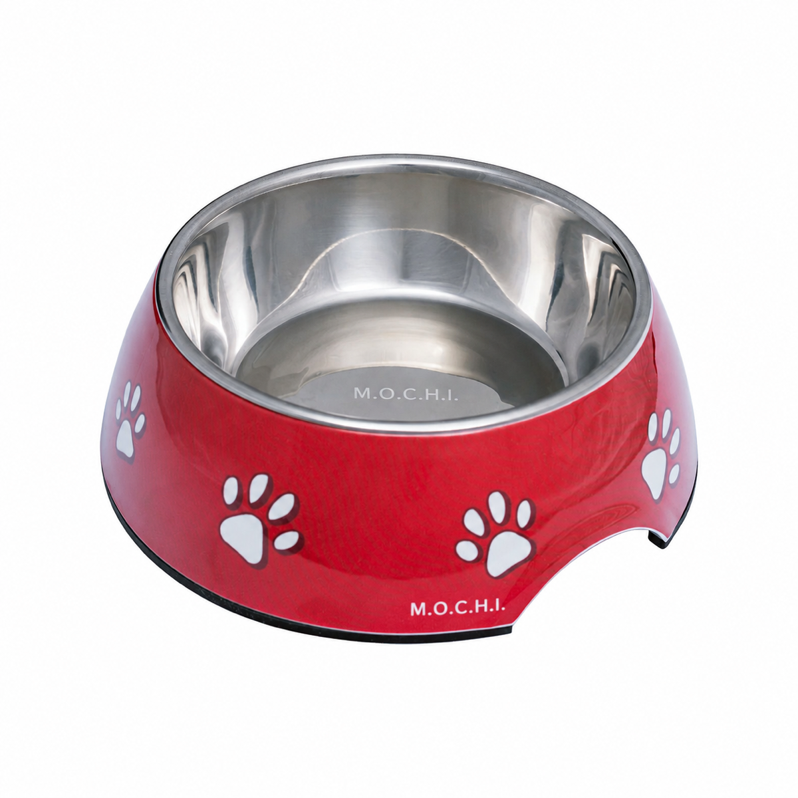
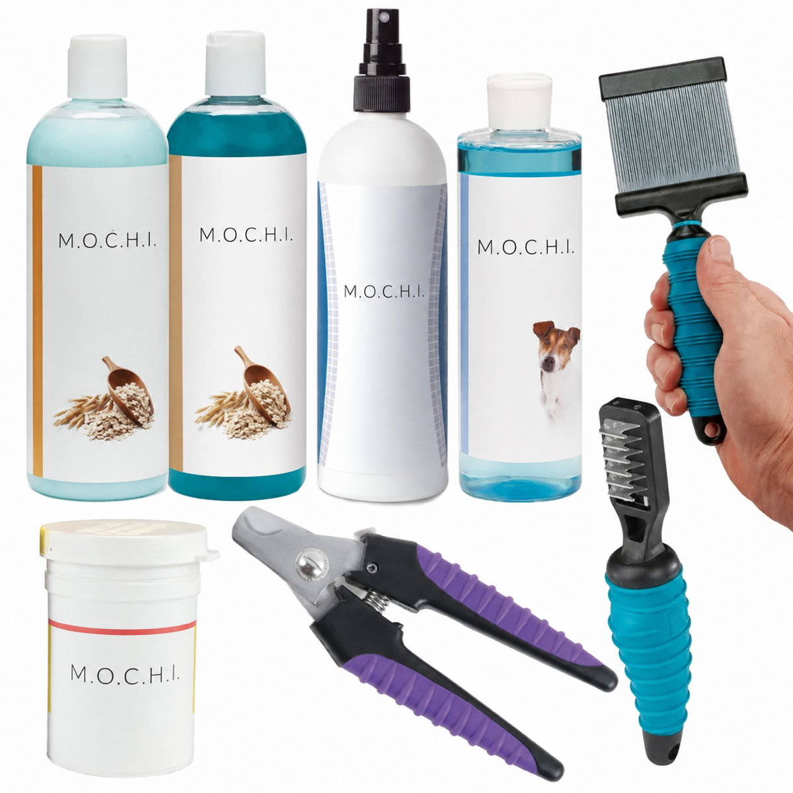
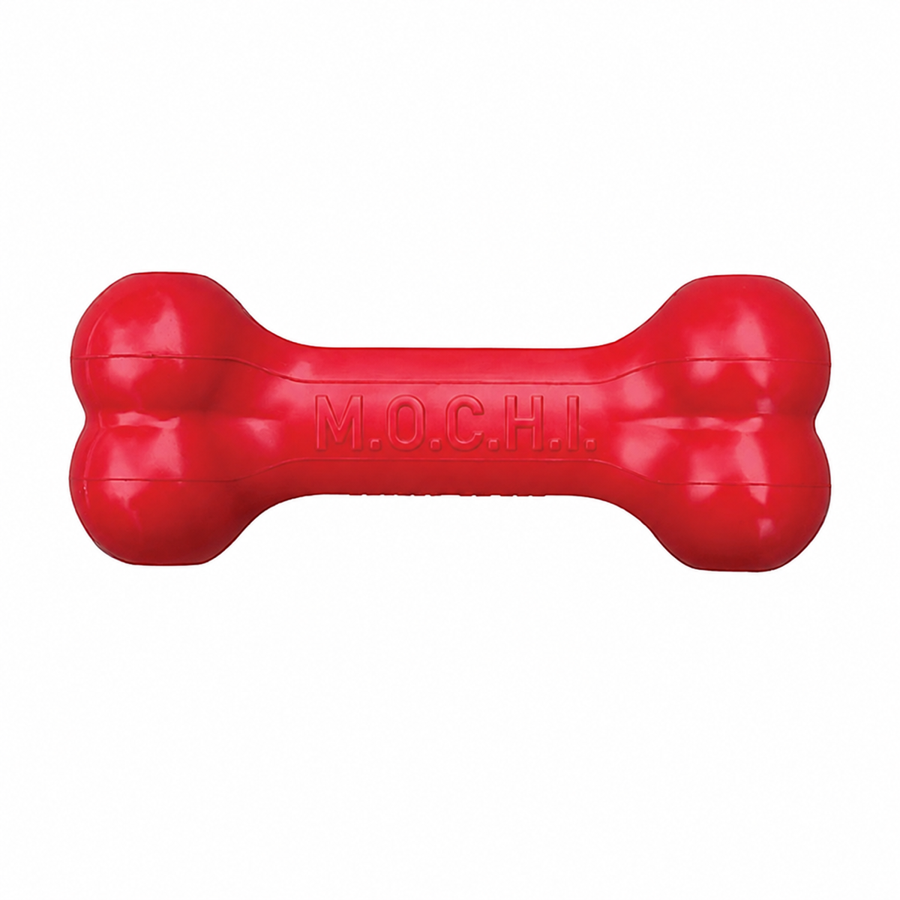
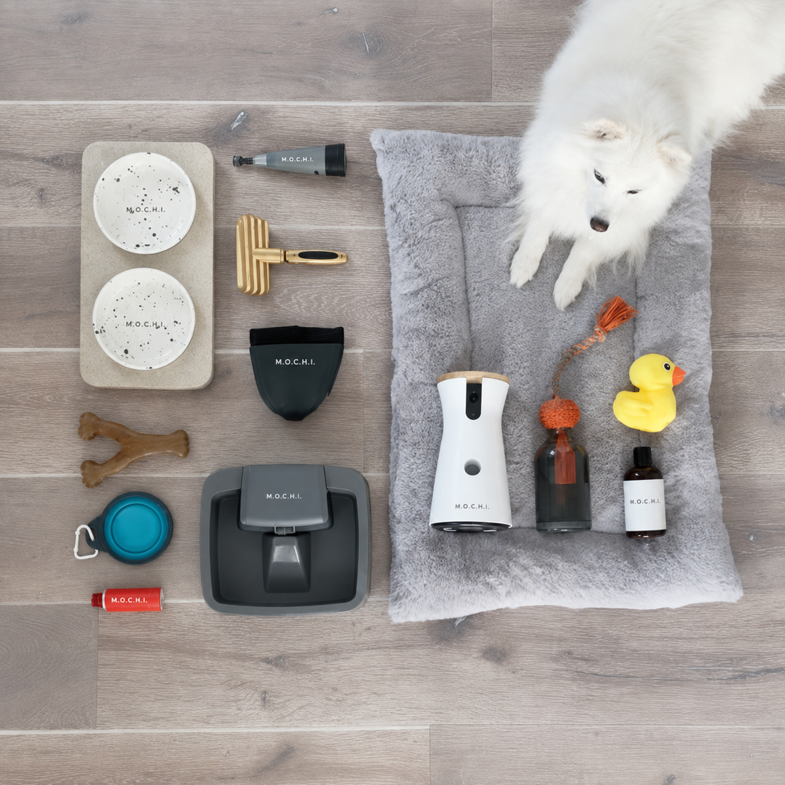
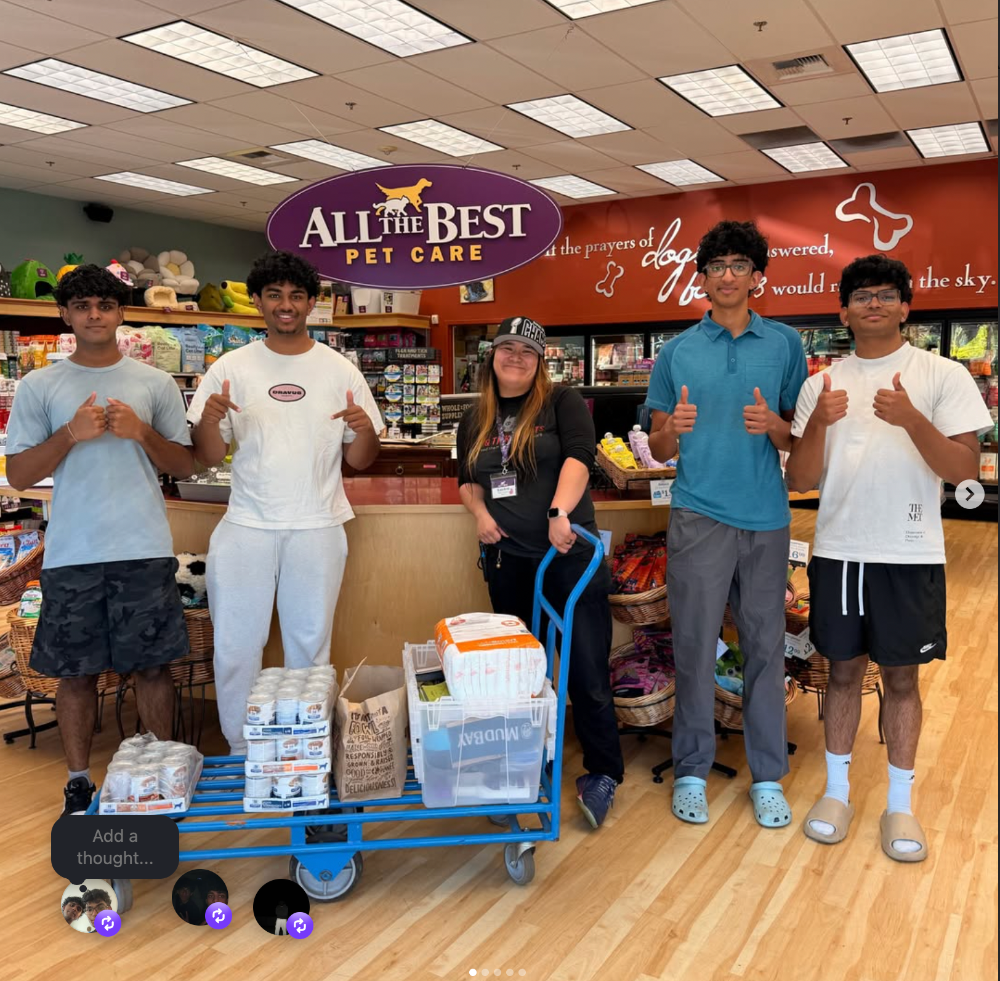
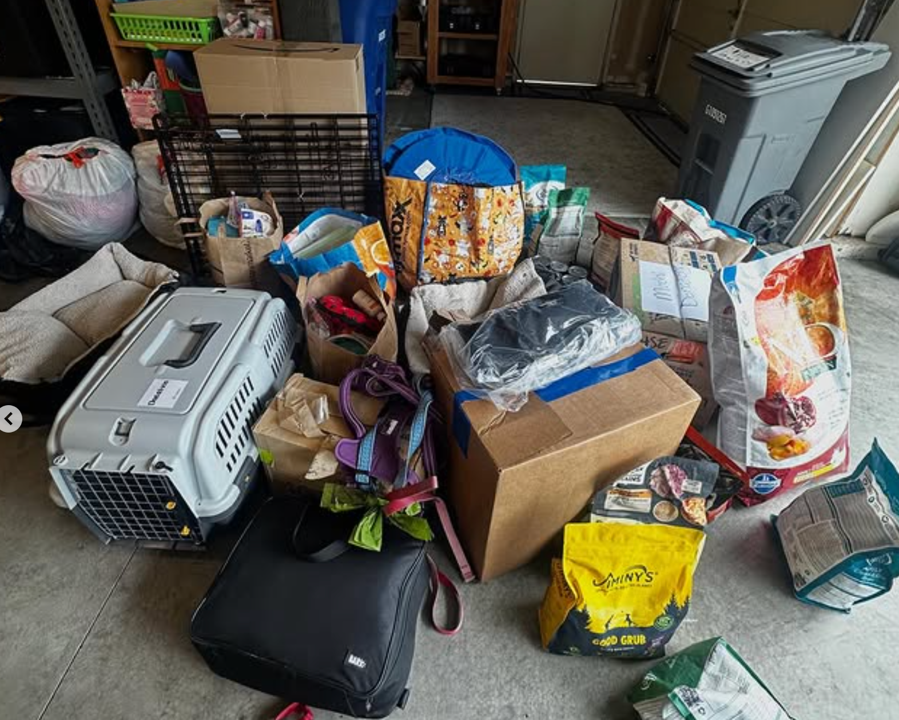
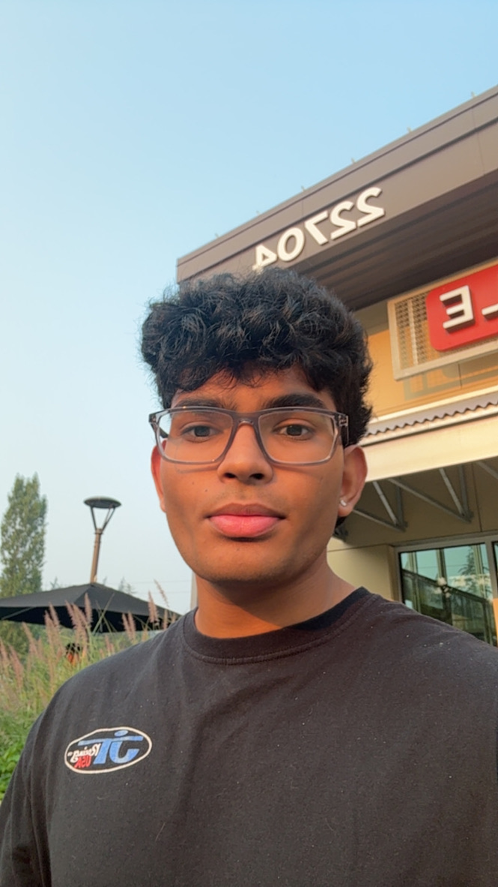

Our mission
01
Help families keep their dogs healthy, safe, and cared for.
To help families who need extra support get the basic supplies their dogs need to stay healthy, safe, and cared for.
Youth-led · community-driven
The Mochi Foundation brings young people, community groups, pet-care teams, and local partners together to support pets and the people who care for them.
Our community
Working with local organizations, businesses, schools, and community groups helps Mochi reach more pets and families.
What Mochi stands for
Pets are family. Support should be accessible.
When a family is going through a hard season, a little practical support can make a real difference. Mochi helps connect people with essential pet supplies and projects that keep communities close.
To help families who need extra support get the basic supplies their dogs need to stay healthy, safe, and cared for.
We want to bring people together so more dogs can stay healthy, supported, and with the families who love them.
Our work
We create clear ways for students, pet owners, volunteers, and local organizations to show up for pets and their families.
Help connect pet owners with essential supplies and available community resources.
Learn more ↗Built to grow carefully
These community-wide figures reflect what young people and their communities have done together. They are not presented as results from website donations alone.
See our projects
This total is part of Mochi’s broader community work. It is not a promise that one donation buys a fixed item.
See project stories ↗Public project locations
See where Mochi has worked with communities, organizations, and local projects. Only verified public locations will appear here.
Types of support
Small supplies can make a big difference for a pet and the family caring for them.
Helping families keep their pets fed when an extra bag of food can make a real difference.
Build a care kit
Choose a few everyday items and see how a simple bundle can support a pet and the family caring for them.
A simple set of supplies can mean a lot to a family.
Help fill a kit →Current needs
These statuses are managed in one shared data list so the supply board can stay current.

Update this note with the current food request.

Update this note with current sizes or quantities.

Update this note when the supply list changes.

Update this status as inventory changes.

Add a specific item here when a current need is confirmed.

Add a specific item here when a current need is confirmed.
Gather with us
From supply drives to community days, every event is a practical way to help.
View project stories ↗From our community
Projects, people, pets, and the moments behind our work.


People behind the work
A student-led team working together to support pets, families, and our community.
Meet the full team ↗
People behind the work
Mochi grows through the people, schools, businesses, and community organizations willing to work together for pets and their families.
See community connections ↗student-led
community-ready
Youth leadership
Start a student-led Mochi chapter and organize projects that support pets and families where you live.
Pet support
Mochi works to connect pet owners with available supplies and community resources when possible. You deserve to ask for help without having to explain everything.
Tell us what you need.
Mochi reviews your request.
We contact you about next steps.
If resources are available, we coordinate support.
Clear next steps
A few quick answers for people looking to ask for help, give support, or get involved with Mochi.
Mochi works to connect pet owners with available supplies and community resources when possible. Use the request form to tell us what would help; submitting a request does not guarantee support.
Donations support Mochi’s broader community work, including pet supplies, community projects, and direct support when resources are available.
Start with a few students or community members, choose a small pet-support project, and use Mochi’s readiness guide to plan the next step.
Volunteer by showing up for a project, supply drive, or event. Visit Events for current opportunities.
Find your way in